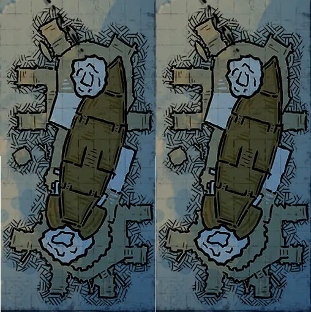
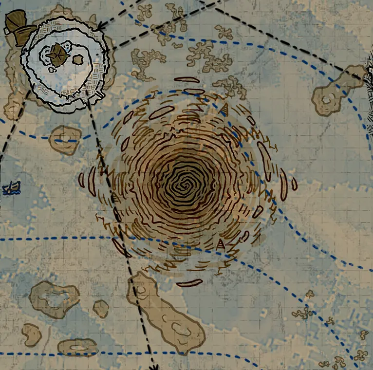
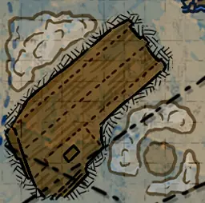
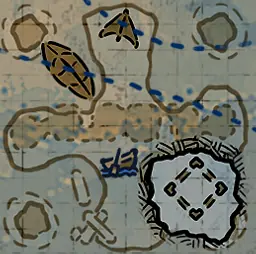

水图
钉手的藏身处 (ShipGraveyard_BladehandRefuge)ShipGraveyard_BladehandRefuge_D.json
ShipGraveyard_BladehandRefuge.png | 找到 2 个位置 | 自动范围: ±1600

环形岛 (ShipGraveyard_CircleIsland)ShipGraveyard_CircleIsland_D.json
ShipGraveyard_CircleIsland.png | 找到 1 个位置 | 自动范围: ±1600

珊瑚密林 (ShipGraveyard_CoralForest_01)ShipGraveyard_CoralForest_01_D.json
ShipGraveyard_CoralForest_01.png | 找到 4 个位置 | 自动范围: ±1600

水上村落 (ShipGraveyard_FloatingVillage)ShipGraveyard_FloatingVillage_D.json
ShipGraveyard_FloatingVillage.png | 找到 4 个位置 | 自动范围: ±1600

吊船 (HangingShip)ShipGraveyard_HangingShip_HR_D.json
ShipGraveyard_HangingShip.png | 找到 7 个位置 | 自动范围: ±1600

蓝洞 (Hole)ShipGraveyard_Hole_HR_D.json
ShipGraveyard_Hole.png | 找到 22 个位置 | 自动范围: ±6400

人鱼冢 (MermaidTomb)ShipGraveyard_MermaidTomb_HR_D.json
ShipGraveyard_MermaidTomb.png | 找到 6 个位置 | 自动范围: ±1600

海洋要塞 B (ShipGraveyard_SeaFortress_02)ShipGraveyard_MistWatch_D.json
ShipGraveyard_MistWatch.png | 找到 4 个位置 | 自动范围: ±1600

海底火山 (ShipGraveyard_Oceanvolcano)ShipGraveyard_Oceanvolcano_D.json
ShipGraveyard_Oceanvolcano.png | 找到 4 个位置 | 自动范围: ±1600

沉眠之船 (ShipGraveyard_SleepingShip)ShipGraveyard_ShipRest_D.json
ShipGraveyard_ShipRest.png | 找到 2 个位置 | 自动范围: ±1600

孵化池 (SpawningPool)ShipGraveyard_SpawningPool_HR_D.json
ShipGraveyard_SpawningPool.png | 找到 8 个位置 | 自动范围: ±1600

海星谷 (ShipGraveyard_StarfishValley)ShipGraveyard_StarfishValley_D.json
ShipGraveyard_StarfishValley.png | 找到 6 个位置 | 自动范围: ±1600

沉没之船 (ShipGraveyard_SunkenShip_01)ShipGraveyard_SunkenShip_01_D.json
ShipGraveyard_SunkenShip_01.png | 找到 9 个位置 | 自动范围: ±1600

海沟 (ShipGraveyard_Trench)ShipGraveyard_Trench_D.json
ShipGraveyard_Trench.png | 找到 13 个位置 | 自动范围: ±1600